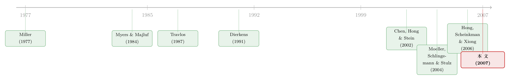

同样是收购，为什么股价反应天差地别？——把答案归结到一个「波动率」
本文读的是 Moeller, Schlingemann & Stulz (2007, Review of Financial Studies)：并购公告日收购方的股价反应，长期以来被发现存在一个稳健的「类型差异」——用股票收购上市公司亏得最惨，用现金收购上市公司几乎不亏，用股票收购私人公司反而赚。作者用「意见分歧 (diversity of opinion)」和「信息不对称 (information asymmetry)」两类不确定性代理变量去解释这一差异，最惊人的结论是：一旦控制住其中一个代理变量——股票的 特质波动率 (idiosyncratic volatility)——这三类交易之间的异常收益差异就消失了。
1 一个被反复确认、却始终没讲清楚的「事实」
并购研究里有一个几乎被写进教科书的「典型事实」(stylized fact)：收购方在宣布并购时的股价反应，强烈地取决于两件事——付什么（现金还是股票）和买谁（上市公司还是私人公司）。
具体到这篇文章的样本（1980–2002，全部 4,322 起纯现金或纯股票收购），三类交易的三日累计异常收益 (cumulative abnormal return, CAR) 长这样：
- 用股票收购上市公司：
CAR(−1,+1) = −2.28%，是最难看的一类； - 用现金收购上市公司：
+0.67%，基本不亏； - 用股票收购私人公司：
+3.42%，居然是赚的。
三两两相减，差异大得惊人也极其显著：上市股票 − 私人股票 = −5.70%（t 检验 1% 显著），上市股票 − 上市现金 = −2.95%，私人股票 − 上市现金 = +2.76%。
问题来了。同样是「掏钱买一家公司」这个动作，为什么市场的反应能差出 8 个百分点？ 传统的解释是「信号」：用股票付账，等于管理层在暗示「我家股票现在贵了，趁机换点真东西」，于是市场把股价打下来——这就是从 Myers and Majluf (1984) 一路下来、被 Travlos (1987) 写进并购文献的经典逻辑。但这个故事只告诉你「股票收购该跌」，它讲不清楚为什么股票收购私人公司反而涨，也讲不清这个差异在不同公司之间为什么有大有小。
这篇文章想做的，不是再确认一遍这个事实，而是问一个更狠的问题：这三类交易之间的差异，到底是「交易类型」本身造成的，还是被某种藏在公司身上、与交易类型相关的「不确定性」给伪装出来的？
2 两种「不确定性」，两套预言
作者把目光投向两类理论，它们都把某种「不确定性」放在中心，但讲的是完全不同的机制。理解这篇文章，关键就是分清这两套故事各自预言什么。
第一套：意见分歧 (diversity of opinion)。 这条线从 Miller (1977) 开始：当投资者对一只股票的前景看法越分散，而做空又受限时，股价就会被那批最乐观的人「顶」上去，于是这只股票的需求曲线是向下倾斜的。Chen, Hong & Stein (2002) 和 Hong, Scheinkman & Xiong (2006) 把这套逻辑模型化。核心推论是：当一笔收购增加了收购方股票的「流通量」(float)，意见分歧越大的公司，股价被压得越狠——因为新增的股票必须由那些原本看法没那么乐观的投资者来吸收。
这套逻辑的妙处在于，它天然地区分了三类交易：用股票收购上市公司，会实打实地增加 float，所以意见分歧越大、跌得越多；用现金收购，float 完全不变，所以没有影响；用股票收购私人公司呢？作者提出一个很关键的细节——私人公司的卖方拿到股票后未必马上抛（可能有锁定协议、想在新公司里有话语权、或有资本利得税考虑），所以这些股票「沉睡」着，不真正进入 float，因此意见分歧的负面效应也很弱甚至没有。（关于做空约束与并购支付方式如何互相纠缠，可参见《想躲开套利者的「做空」，就用现金买下它》。）
第二套：信息不对称 (information asymmetry)。 这条线就是 Myers–Majluf 的延伸。用股票付账是「坏消息」（股票被高估），所以异常收益为负；用现金付账反过来是「好消息」，异常收益应该上升。Krasker (1986) 进一步证明，发行规模越大，价格跌得越多。而对于私人公司，卖方能直接从收购方那里拿到机密信息、甚至能「认证」收购方没被高估——所以对私人公司用股票，信息不对称的影响应该是没有，或者正向。
作者把这两套预言，连同一个必须排除的「干扰项」——不确定性消解 (resolution of uncertainty)——整整齐齐地列进了一张表（论文表 1）。这张表是全文的「骨架」：
| 增加的变量 | 股票收购上市公司 | 现金收购上市公司 | 股票收购私人公司 |
|---|---|---|---|
| 意见分歧 | 下降 | 无影响 | 无影响 |
| 信息不对称 | 下降 | 上升 | 上升或无影响 |
| 不确定性消解 | 下降 | 下降 | 下降 |
看出门道了吗？三套理论对「股票收购上市公司」的预言完全一样（都该跌），但对另外两类交易的预言各不相同。 这正是作者的识别策略：不去看股票收购上市公司——那里三套理论无法区分——而是去看现金收购和私人公司收购，用预言的分歧把理论区分开。这是全文最聪明的一步设计。
为什么非得把「不确定性消解」也放进来？因为不确定性高的公司，本来就更容易在并购时「把不确定性消解掉」，而 Pástor and Veronesi (2006) 等模型说，消解长期增长的不确定性本身会降低公司价值。如果不把它排除，你就分不清代理变量到底是在度量「意见分歧/信息不对称」，还是仅仅在度量「不确定性被消解了」。
3 怎么把「不确定性」量出来？
理论再漂亮，也得落到能算的变量上。作者用了几把尺子：
度量意见分歧，用两个：
1. 分析师长期增长预测的标准差 (standard deviation of analyst LTG forecasts)——分析师们对这家公司未来 3–5 年盈利增速的预测有多分散。要求并购前一个月至少有 3 位分析师跟踪，数据来自 I/B/E/S。这一要求把样本砍到 1,553 起。
2. 持有广度 (breadth of ownership)——持有该股票的共同基金占比。Chen, Hong & Stein (2002) 证明，意见分歧越大、做空受限，越多基金想卖却卖不掉，于是持有广度越低。所以广度是意见分歧的反向代理。
度量信息不对称，用 Dierkens (1991) 的两个：
1. 特质波动率（论文里就叫 volatility）——市场模型残差的标准差，用公告前 (−205, −6) 天估计；
2. 盈利公告残差标准差——盈利公告窗口三日 CAR 在过去 5 年的标准差。
这里埋着全文最微妙的一处张力：特质波动率，既被信息不对称文献当作信息不对称的代理，也被近期意见分歧文献（如 Boehme, Danielsen & Sorescu, 2006）当作意见分歧的代理。 同一个变量，两套理论都想认领。这件事到后面会变成「反转」的引爆点。
异常收益 CAR(−1,+1) 用标准事件研究法算（Brown and Warner, 1985），市场模型基于 CRSP 等权指数。
4 第一层结果：意见分歧确实「咬人」，但只咬一类交易
先看意见分歧。结果和理论预言对得很齐：
对于用股票收购上市公司，分析师预测越分散，收购方异常收益越低。量级上——把一家分析师预测标准差「低」（均值下方 1 个标准差）的收购方，换成「高」（均值上方 1 个标准差）的收购方，公告异常收益大约下降 2.6%。这是个经济上很可观的数字。持有广度这个代理也给出一致的方向。
而对于用现金收购上市公司、用股票收购私人公司，意见分歧与异常收益之间没有那种负向关系。这正是表 1 第一行所预言的：现金不动 float，私人公司的股票「沉睡」不进 float。
到这一步，意见分歧模型看起来表现得相当好。但作者很诚实地指出了它的软肋：意见分歧模型有一个更直接、更强的预言——交易规模越大（float 增加越多），意见分歧的负面冲击应该越强，也就是说，「意见分歧 × float 增幅」这个交互项应该显著为负。可作者发现，对这个更强的预言，支持非常有限。更尴尬的是，对现金收购上市公司，他们还发现了异常收益随意见分歧上升的迹象——这是意见分歧模型完全无法解释的。
5 反转：当特质波动率走进回归
真正的反转，发生在信息不对称这条线上。
作者发现，特质波动率对理解收购方异常收益「极其有用」：在「股票收购上市公司」的回归里，波动率越高，异常收益越低（信息不对称越严重，发股票的「坏消息」越坏）；而在「现金收购上市公司」的回归里，波动率越高，异常收益反而越高——这恰恰是表 1 中只有信息不对称模型才做出的预言（现金收购那一格是「上升」，而意见分歧和不确定性消解都不是）。
于是三套理论里，只有信息不对称的预言在三类交易上全都成立。
然后是那记重拳。作者把意见分歧的代理变量，加进已经包含特质波动率的回归里——结果，意见分歧的代理变量不再显著了。换句话说，分析师预测分散度看似在解释收购方收益，实际上它的解释力可以被特质波动率「吸收」掉。
而最惊人的结论，出现在文章一开始就被作者拎出来当卖点的地方：
控制住特质波动率这一个变量之后，「现金收购上市公司」「股票收购上市公司」「股票收购私人公司」三类交易之间的异常收益差异，统统消失了。
回想第 1 节那 8 个百分点的鸿沟。在没有控制变量时，它显著、稳健、年复一年地存在。可一旦把特质波动率放进去，那条横亘在三类交易之间的沟，就被填平了。这意味着：我们一直以为是「交易类型」造成的股价反应差异，很大程度上其实是「收购方公司本身的信息环境不同」造成的——不同类型的交易，恰好被信息环境不同的公司所选择。
6 文献脉络：从 Miller 的需求曲线到 Stulz 的并购账本
把这篇文章放回它所在的那条河流里，脉络相当清晰。
源头有两支。一支是 Miller (1977) 的「意见分歧 + 做空约束 → 向下倾斜的需求曲线」，这条线被 Diamond and Verrecchia (1987) 在信息层面深化，被 Diether, Malloy & Scherbina (2002) 用分析师预测分散度做成了横截面实证、被 Chen, Hong & Stein (2002) 用「持有广度」重新表述、又被 Hong, Scheinkman & Xiong (2006) 接到资产泡沫上。另一支是 Myers and Majluf (1984) 的逆向选择，被 Krasker (1986) 推广到发行规模、被 Travlos (1987) 第一次系统地用到并购支付方式上，又被 Dierkens (1991) 落地成「用什么变量度量信息环境」。

这篇文章站在两支汇流处。它的直接「母本」是作者自己的 Moeller, Schlingemann & Stulz (2004)——那篇研究并购规模与收益，本文沿用了它的控制变量集。而本文的贡献，是第一次把意见分歧和信息不对称这两套理论，放进同一张预言表、同一个样本里做横向「裁判」，并意外地发现，一个被两套理论共同争夺的变量（特质波动率），可以把困扰文献多年的「交易类型差异」一举抹平。（这条「并购公告收益究竟由什么驱动」的追问，后来也延伸到了机构与基金经理的角色，可参见《「机构持股越多，并购做得越好」——可这真的是监管的功劳吗？》。）
这是一篇纯实证论文：它不构建新的理论模型，而是把已有模型的预言抽取出来、放到数据上对质。所以本文没有需要逐步推导的方程一节——它的「数学」全在那张预言表和回归系数里。
评论与延伸（Q&A + 研究方向）
(a) 几个可能的疑问
Q：意见分歧和信息不对称，到底是不是一回事？
概念上不是。意见分歧是「投资者之间看法分散」（同样的信息，不同的解读），它的作用机制依赖做空约束和 float；信息不对称是「内部人比外部人知道得多」（信息本身不对称），机制是逆向选择/信号。但麻烦在于实证代理变量会「串台」——特质波动率两边都被用作代理。本文的做法不是从概念上切开它们，而是利用它们对「现金收购」和「私人公司收购」的预言不同来区分，这是聪明的迂回。
Q：那篇文章是不是其实证明了「意见分歧不重要」？
不能这么说。意见分歧的代理在「股票收购上市公司」里确实显著（高低分散度差出约 2.6% 的 CAR），方向也对。文章证明的是更弱也更精确的命题：一旦控制特质波动率，意见分歧的增量解释力就消失了，而且意见分歧模型那个「更强」的交互项预言（规模 × 分歧）几乎得不到支持。所以是「信息不对称在这场对质里更胜一筹」，而非「意见分歧是错的」。
Q：把三类交易差异「抹平」的，会不会只是特质波动率在当某种规模或成长性的影子？
这是最该担心的内生性。波动率高的公司往往更小、更年轻、成长性更不确定，而这些公司也更倾向于用股票收购私人公司。本文沿用 MSS (2004) 的控制变量（规模、Tobin's q、杠杆、run-up、治理指数等）来缓解，但这终究是横截面相关性，不是干净的因果。波动率「填平了差异」既可能因为它度量了信息不对称，也可能因为它是某种未被完全控制的公司类型的代理。
Q：样本只剩 1,553 起带分析师数据的交易，会不会有选择偏误？
会，而且作者很坦白。要求至少 3 位分析师跟踪，会把样本严重推向大公司（CRSP∩COMPUSTAT∩I/B/E/S 的交集天然偏大盘），且越往后年份覆盖率越高：1980–1990 只纳入了 21.55%，而 1998–2000 纳入了 62.53%，最近一轮并购潮被显著高估了。带分析师数据的子样本平均 CAR 比全样本低约 150 个基点。所以涉及分析师代理的结论，外推到中小公司时要打折扣。
Q：为什么用股票收购私人公司能赚钱，这事儿本身不奇怪吗？
在信息不对称框架下并不奇怪。私人公司的卖方能直接获取收购方的机密信息，甚至愿意收下股票这件事本身就「认证」了收购方没被高估（这个论点 Hertzel and Smith, 1993 在私募配售里提过）。加上本文强调的 float 机制——卖方拿了股票多半「沉睡」不抛——所以既没有信号上的坏消息，也没有意见分歧的下行压力。两套机制在这一类交易上恰好都「失效」，留下的就是协同效应的好消息。
Q：现金收购那一格出现「异常收益随意见分歧上升」，该怎么理解？
这是本文留下的一个未解的尴尬。意见分歧模型预言现金收购「无影响」，信息不对称模型预言「上升」。数据里现金收购呈现的正向关系，只与信息不对称模型相容，与意见分歧模型相悖。作者据此判定信息不对称模型解释力更强，但也没有给出现金收购里这个正向关系的完整微观故事——它更像是支持信息不对称的「附带证据」，而非被精确刻画的机制。
(b) 几个可能的研究问题与提案
1. 把这套「预言表」搬到公司债市场。
- 【经济故事】并购对收购方债权人的影响，与对股东的影响方向常常相反（风险转移、共同保险效应）。意见分歧和信息不对称对债券价格的作用，理论上应与股票镜像：信息不对称越严重，债券利差对支付方式的反应应越剧烈。把表 1 改写成「收购方债券利差」版本，是一个干净的延伸。
- 【可行性】中。需要 TRACE 债券成交数据匹配 SDC 并购事件，事件窗口内的债券异常利差变化可算；难点是债券流动性低、成交稀疏，CAR 噪声大，需要用日内或周度利差并控制流动性。
2. 用做空约束的外生变化做识别。 - 【经济故事】意见分歧模型的命门是「做空受限」。如果能找到做空约束放松的外生冲击（如 Reg SHO 试点、期权上市降低做空成本），就能检验：约束放松后，意见分歧对「股票收购上市公司」CAR 的负向效应是否减弱。这能把本文的横截面相关性升级为接近因果的证据。 - 【可行性】高。Reg SHO 试点（2005 年起）是文献里成熟的 DiD 工具，并购样本可与试点名单交叉，识别策略清晰。
3. 外资持有人作为「沉睡股东」的天然实验。 - 【经济故事】本文的私人公司机制依赖「卖方拿了股票不抛、不进 float」。外资被动持有人（指数型外资）也具有「沉睡」特征——换手低、不参与做空。可检验：收购方外资被动持股越高，股票收购的 float 冲击是否越弱、CAR 越不受意见分歧影响。 - 【可行性】中。需要 FactSet/ 13F 拆分外资被动 vs 主动持股，匹配并购事件；识别上仍是横截面，但可借指数纳入（如 MSCI 重订权重）的外生持股变动来加强。
4. 用机器学习重新度量「意见分歧」。 - 【经济故事】分析师预测标准差是个粗糙的意见分歧代理，且样本偏大盘。能否用新闻文本、社交媒体、期权隐含分布等高频信号构造更细的意见分歧度量，重做本文的横截面对质，看特质波动率是否仍能「吸收」一切？ - 【可行性】中。文本/期权数据可得，但要小心新构造的代理与波动率的机械相关——否则只是换个变量重复本文的「串台」问题。
5. 把「不确定性消解」从干扰项变成主角。 - 【经济故事】本文把不确定性消解当作必须排除的噪声，但 Pástor–Veronesi 的逻辑本身很有意思：成长性越好的公司，并购消解掉的不确定性越值钱、价值损失越大。可专门检验并购公告后长期增长预测分散度的下降幅度与 CAR 的关系，把消解效应单独识别出来。 - 【可行性】高。I/B/E/S 的 LTG 预测分散度在并购前后的变化可直接度量（本文表 2 Panel D 已有这类数据），事件研究框架现成。
参考文献
- Baker, M., J. D. Coval, and J. C. Stein (2006). Corporate Financing Decisions When Investors Take the Path of Least Resistance. Journal of Financial Economics 84, 266–298.
- Boehme, R. D., B. R. Danielsen, and S. M. Sorescu (2006). Short Sale Constraints, Differences of Opinion, and Overvaluation. Journal of Financial and Quantitative Analysis 41, 455–487.
- Brown, S. J., and J. B. Warner (1985). Using Daily Stock Returns: The Case of Event Studies. Journal of Financial Economics 14, 3–31.
- Chen, J., H. Hong, and J. C. Stein (2002). Breadth of Ownership and Stock Returns. Journal of Financial Economics 66, 171–205.
- Diamond, D. W., and R. E. Verrecchia (1987). Constraints on Short-Selling and Asset Price Adjustment to Private Information. Journal of Financial Economics 18, 277–311.
- Dierkens, N. (1991). Information Asymmetry and Equity Issues. Journal of Financial and Quantitative Analysis 26, 181–200.
- Diether, K. B., C. J. Malloy, and A. Scherbina (2002). Differences of Opinion and the Cross Section of Stock Returns. Journal of Finance 57, 2213–2241.
- Hertzel, M. G., and R. L. Smith (1993). Market Discounts and Shareholder Gains for Placing Equity Privately. Journal of Finance 48, 459–485.
- Hong, H., J. Scheinkman, and W. Xiong (2006). Asset Float and Speculative Bubbles. Journal of Finance 61, 1073–1117.
- Krasker, W. C. (1986). Stock Price Movements in Response to Stock Issues Under Asymmetric Information. Journal of Finance 41, 93–106.
- Miller, E. M. (1977). Risk, Uncertainty, and Divergence of Opinion. Journal of Finance 32, 1151–1168.
- Moeller, S. B., F. P. Schlingemann, and R. M. Stulz (2004). Firm Size and the Gains from Acquisitions. Journal of Financial Economics 73, 201–228.
- Moeller, S. B., F. P. Schlingemann, and R. M. Stulz (2007). How Do Diversity of Opinion and Information Asymmetry Affect Acquirer Returns? Review of Financial Studies 20(6), 2047–2078.
- Myers, S. C., and N. S. Majluf (1984). Corporate Financing and Investment Decisions When Firms Have Information That Investors Do Not Have. Journal of Financial Economics 13, 187–221.
- Pástor, L., and P. Veronesi (2006). Was There a Nasdaq Bubble in the Late 1990s? Journal of Financial Economics 81, 61–100.
- Travlos, N. G. (1987). Corporate Takeover Bids, Methods of Payment, and Bidding Firms' Stock Returns. Journal of Finance 42, 943–963.